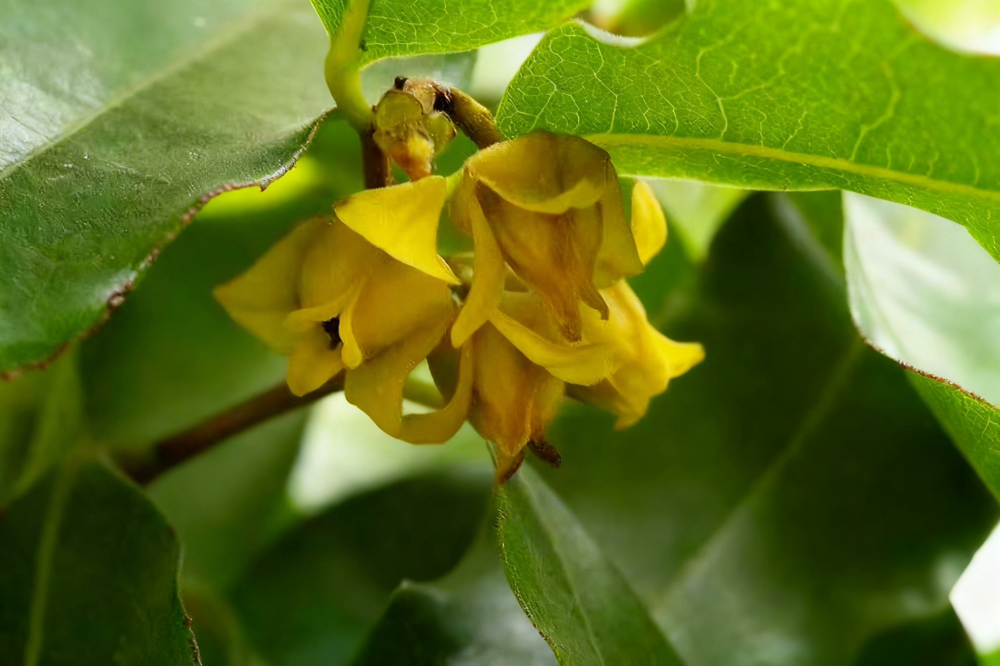

📇
基础名片
Basic Info
云南澄广花
学名：Orophea yunnanensis
科属：番荔枝科澄广花属
保护级别：极危（CR）
学名：Orophea yunnanensis
科属：番荔枝科澄广花属
保护级别：极危（CR）
🌿
形态特征
Morphology
形态特征
常绿大乔木；
株：常绿灌木（野外岩壁上植株可达7米），高约2米，树皮淡黑色，枝条无毛；
叶：叶革质，长椭圆形，长2.5-7.5cm，侧脉细密（10-15对），两面凸起；
花：花小（直径约3mm），黄绿色，2朵丛生叶腋，花期4月；
果：果实为浆果，每心皮含3颗胚珠，果期6月左右；
常绿大乔木；
株：常绿灌木（野外岩壁上植株可达7米），高约2米，树皮淡黑色，枝条无毛；
叶：叶革质，长椭圆形，长2.5-7.5cm，侧脉细密（10-15对），两面凸起；
花：花小（直径约3mm），黄绿色，2朵丛生叶腋，花期4月；
果：果实为浆果，每心皮含3颗胚珠，果期6月左右；
🌱
生长环境
Habitat
生长环境
产地：云南特有，仅分布于云南中部及西部，模式标本采自玉溪市澄江市；
特有：中国云南特有物种，属于番荔枝科极小种群狭域植物；
生境：要生长于喀斯特石灰岩山地、沟谷边坡、灌丛中或岩壁缝隙间，依附湿润且排水良好的岩石生境；
海拔：1300-1900m；
物候：花期4月，果期6-7月；花小，两性花，单生或2-3朵簇生于叶腋；
产地：云南特有，仅分布于云南中部及西部，模式标本采自玉溪市澄江市；
特有：中国云南特有物种，属于番荔枝科极小种群狭域植物；
生境：要生长于喀斯特石灰岩山地、沟谷边坡、灌丛中或岩壁缝隙间，依附湿润且排水良好的岩石生境；
海拔：1300-1900m；
物候：花期4月，果期6-7月；花小，两性花，单生或2-3朵簇生于叶腋；
💊
价值作用
Value
价值作用
药用价值:
含三萜类、黄酮类等活性成分，同属植物具抗炎、抗氧化、抗菌潜力。
研究价值:
番荔枝科的原始类群，对研究被子植物系统发育、古植物区系演化意义重大。仅生于喀斯特石灰岩山地，是研究植物极端环境适应机制的关键材料。
药用价值:
含三萜类、黄酮类等活性成分，同属植物具抗炎、抗氧化、抗菌潜力。
研究价值:
番荔枝科的原始类群，对研究被子植物系统发育、古植物区系演化意义重大。仅生于喀斯特石灰岩山地，是研究植物极端环境适应机制的关键材料。

野生云南澄广花种群云南地区分布
野生云南澄广花种群数量变化